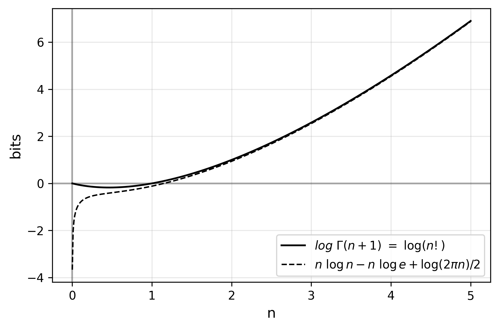
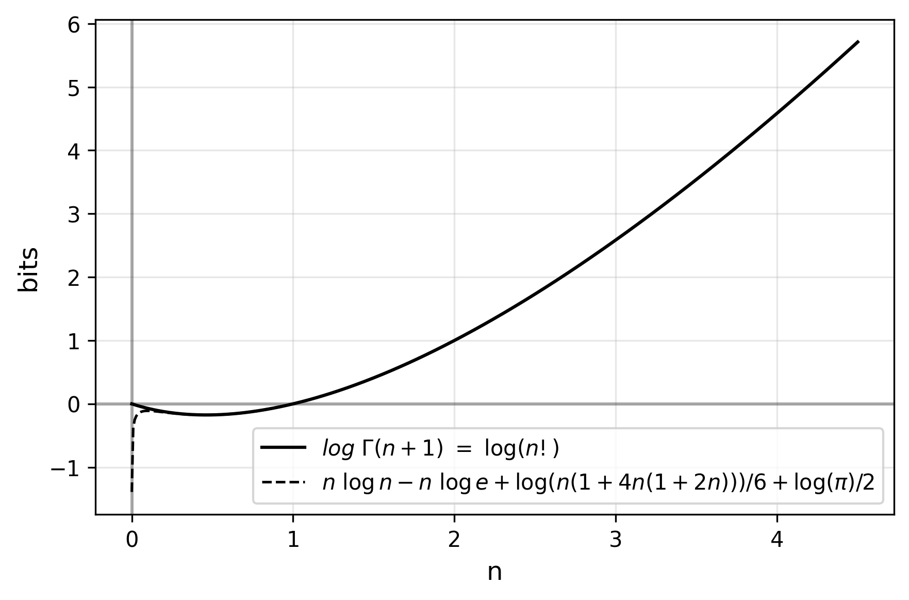
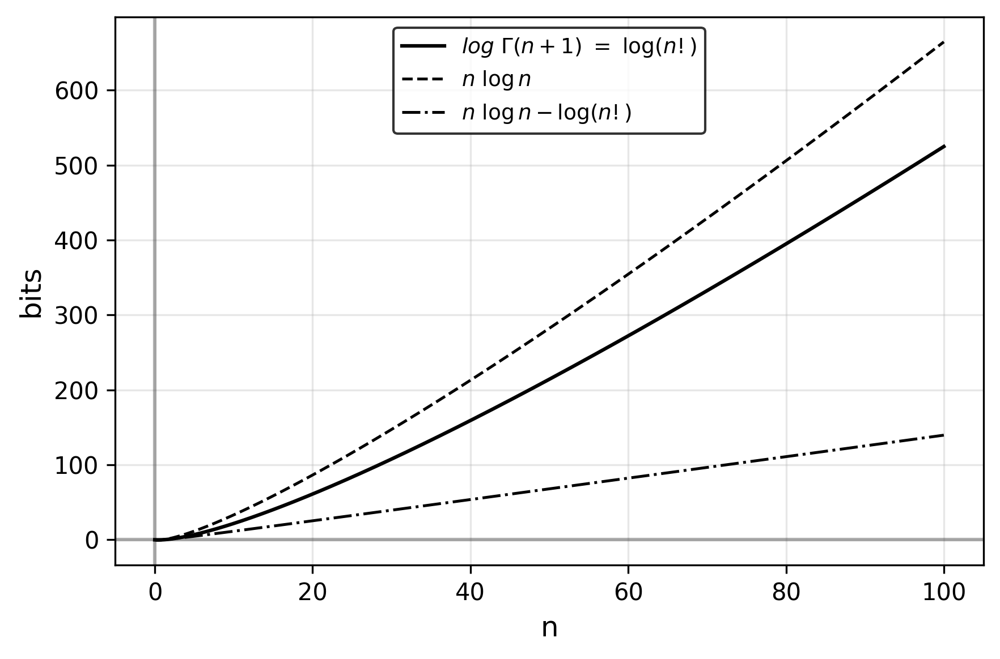

This note exists mainly because I couldn’t find much about this online.
Information From Probability
When compressing data with arithmetic coding, the length of the produced code is equal to the information content of the data (rounded to the next integer) with respect to the probabilistic model used. It takes 1 bit to encode a coin flip, 2.58496 to encode a dice roll, 4.70044 for a letter of the alphabet. If you know the relative frequency of letters in English, you only need about 4.18, if you know the frequency of words, it goes down to about 2.62 per letter, and you can imagine knowing grammar rules or even general knowledge would bring it even further down.
In general, the formula for information content is
\[\mathrm{I}(x)=-\log p(x),\]
where \(p(x)\) is the probability of \(x\). The information content of a sequence of events or symbols is just the sum of the information contents of each, just like the concatenated codes will have length equal to the sum of individual codes.
Categorical With Replacement
For a sequence of \(N\) symbols with individual frequencies \(n_0, n_1, n_2, ...\), such that
\[\sum_i{n_i} = N,\]
the categorical model giving the shortest code length, i.e the highest likelihood to the data, is the one where the probability assigned to each symbol is proportional to its frequency in the data (i.e. the MLE). If you work out the information content of the full sequence against its categorical MLE, that comes out to
\[\begin{align} \mathrm{I}(X) &= -n_0 \log p(x_0) - n_1 \log p(x_1) - n_2 \log p(x_2) -\ ...\\[8pt] &= -n_0 \log \left(\frac{n_0}{N}\right) - n_1 \log \left(\frac{n_1}{N}\right) - n_2 \log \left(\frac{n_2}{N}\right) -\ ... \\[8pt] &= \left(\sum_i n_i\right) \log N -n_0 \log n_0 - n_1 \log n_1 - n_2 \log n_2 -\ ... \\[8pt] &= N \log N -n_0 \log n_0 - n_1 \log n_1 - n_2 \log n_2 -\ ..., \ \end{align}\]
which conveniently isolates our integer parameters into distinct terms. This formula, then, is the length of the arithmetic code of a sequence if every symbol is predicted according to the MLE categorical fitted to the sequence.
Note, however, that it’s easy to algorithmically improve on this code length if the probabilistic model docks counts of symbols as they appear, improving the likelihood of symbols down the sequence compared to the “static” model.
Categorical Without Replacement
It can be proven that the information content of the categorical MLE without replacement (i.e. that docks counts with each observation) follows this formula:
\[\log(N!) -\log(n_0!) - \log(n_1!) - \log(n_2!) -\ ...,\]
Although the factorial is unkind to an algebraic treatment, we can show this is true by induction from the end of the sequence towards the left.
\(\texttt{Proof:}\)
Case N=1: For the sequence with 1 element, \(N = 1\) and \(n_0 = 1\), so
\[\log(1!) - \log(1!) = 0,\]
as in the arithmetic code where the probability of the only symbol \(x_0\) is 1 so the code is empty.
Case N+1: For an additional symbol \(x_i\), given that the length of the code for the rest of the string is
\[\log(N!) -\log(n_0!) - \log(n_1!) - \log(n_2!) -\ ...,\]
for any count \(n_i\) of that symbol in the rest of the string (including 0), the additional code for that symbol has length as a function of its probability at that point:
\[\begin{align}\mathrm{I}(x_i)_{N+1} &= -\log p(x_i)_{N+1} \\[8pt] &= -\log \left(\frac{n_i+1}{N+1}\right) \\[8pt] &= \log(N+1) -\log (n_i+1)\end{align}\]
which integrates into the factorials by the product property of logarithms:
\[\begin{align}&~ \log(N!) + \log(N+1) -\log(n_0!) -\ ...\ -\log(n_i!) - \log(n_i+1) -\ ... \\[8pt] &=\ \log(N! \cdot (N + 1)) -\log(n_0!) -\ ...\ - \log(n_i! \cdot (n_i + 1)) -\ ... \\[8pt] &=\ \log((N + 1)!) -\log(n_0!) -\ ...\ -\ \log((n_i + 1)!) -\ ...,\end{align}\]
which is our formula with updated parameters.Discussion
It is well known that \(n \log n\) (i.e. \(\log(n^n)\)) asymptotically grows at the same rate as \(\log (n!)\) and the former is used to approximate the latter, as seen in Stirling’s approximation
\[\log(n!) = n\log n - n\log e + \frac{1}{2}\log(2\pi n) + O\left(\frac{1}{n}\right)\]

or even Ramanujan’s more precise version:
\[\log(n!) = n\log n - n\log e+\frac{1}{6}\log(n(1+4n(1+2n)))+\frac{1}{2}\log \pi + O\left(\frac{1}{n^3}\right)\]

but these additional terms correct a consistent and significant difference between the two functions:

which definitely translates to the information content of categorical MLE’s w/ vs. w/o replacement, but how much so is not obvious. Experiments on random strings reveals that the w/ replacement requires anywhere from 0.2% (on the longest strings with the smallest alphabets) to 40% (on the smallest strings of mostly distinct symbols) more information to encode the same string than doing it w/o replacement (full table):
+-----+------+-----+-------------+------------+------------+-----------+
| # | N | m | N log(N)... | log(N!)... | (verif.) | delta (%) |
+=====+======+=====+=============+============+============+===========+
| 1 | 828 | 2 | 573.634 | 570.048 | 570.048 | 0.628937 |
+-----+------+-----+-------------+------------+------------+-----------+
| 2 | 4193 | 31 | 14378.1 | 14278.7 | 14278.7 | 0.696137 |
+-----+------+-----+-------------+------------+------------+-----------+
| ... | ... | ... | ... | ... | ... | ... |
+-----+------+-----+-------------+------------+------------+-----------+
| 83 | 290 | 9 | 630.094 | 610.039 | 610.039 | 3.28758 |
+-----+------+-----+-------------+------------+------------+-----------+
| 84 | 3764 | 4 | 5217.54 | 5205.2 | 5205.2 | 0.236958 | (-)
+-----+------+-----+-------------+------------+------------+-----------+
| 85 | 14 | 11 | 32.7879 | 23.1118 | 23.1118 | 41.8667 | (+)
+-----+------+-----+-------------+------------+------------+-----------+
| 86 | 104 | 2 | 72.0104 | 69.4607 | 69.4607 | 3.67064 |
+-----+------+-----+-------------+------------+------------+-----------+
| ... | ... | ... | ... | ... | ... | ... |where \(N\) is the length of the string, \(m\) is the size of the alphabet, the information content is computed w/ and w/o replacement according to the formulae and the w/o replacement value is confirmed through the sum of the individual information of each symbol (simulating an adaptive model), validating our proof. Lastly, the percentage difference w.r.t. the information content w/o replacement.
What’s surprising is that there is no way for the order of the symbols to affect the performance of a w/o replacement strategy. One would think having all the instances of some symbol organized together (e.g. at the beginning) would help an inference w/o replacement by getting them “out of the way”, but the formula is simply not affected by the order of the symbols in the string.
Finally, let’s address the combinatorial connection hinted so far by our choice of vocabulary. Our formula for information content w/o replacement is equal to the \(\log\) of the so-called multinomial coefficient:
\[\begin{align} \mathrm{I}(X) &= \log(N!) - \log(n_0!) - \log(n_1!) - \log(n_2!) -\ \ldots \\[8pt] &= \log \left(\frac {N!}{n_0!\ n_1!\ n_2!\ \cdots}\right) \\[8pt] &= \log {N \choose n_0,n_1,n_2,\ldots},\ \end{align}\]
which is the number of ways a sequence of \(N\) objects with equivalence classes of sizes \(n_0, n_1, n_2, ...\), where
\[\sum_i{n_i} = N.\]
So this whole derivation about probabilities and mutation of a probabilistic model is equivalent to the \(\log\) of the number of possible strings given the same parameters. In the two cases where we restrict the space as much as the parameters allow, we get the same result.
Information From Variety
This motivates an alternative definition of information, the one in term of variety. Much simpler in my opinion; there are no negations, no normalization, just
\[\mathrm{I}(X)= \log \left(V(X)\right),\]
where \(V(X)\) is the variety, or number of states a system \(X\) can find itself in. In terms of the probabilistic definition, it’s as if every state had equal probability:
\[\begin{align}\mathrm{I}(x) &= -\log p(x) \\[5pt] &= -\log \left(\frac{1}{N}\right) \\[5pt] &= \log N.\end{align}\]
But even the probabilistic definition makes more sense in terms of variety as long as the probability is a ratio:
\[\begin{align}\mathrm{I}(x_i) &= -\log p(x_i) \\[5pt] &= -\log \left(\frac{n_i}{N}\right) \\[5pt] &= \log N - \log n_i.\end{align}\]
That is, the information content of a part (\(n_i\)) in a whole (\(N\)) is the information to specify one among the whole (\(\log N\)) minus the information to specify one among the part (\(\log n_i\)), like an interval between \(n\) and \(N\) in \(\log\)-space.